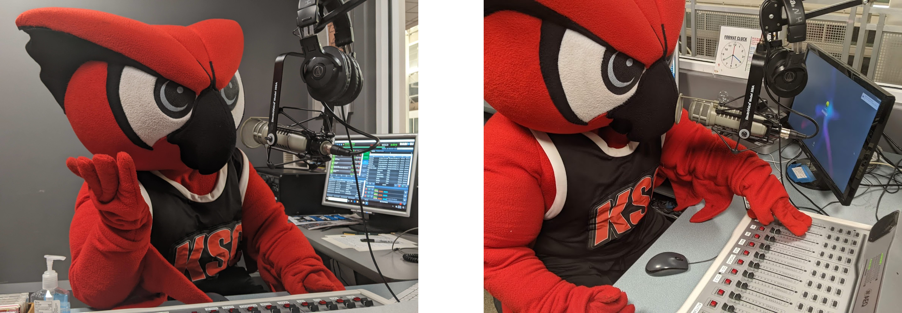

Welcome to WKNH!
About Us
We are WKNH, Keene State's own student run radio station.
We have been broadcasting since 1971, and are still going strong today!
We broadcast out of The Lloyd P. Young Student Center from our third floor office space,
which is where you can usually find us all working and listening to music.
Come stop by and pay us a visit to hang with the coolest cats on campus!